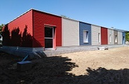
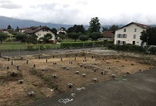

Madera
Le Bois et le Design au service d'une mobilité économe
ACTUALITES
Octobre 2019
EXTENSION D'UNE CRÈCHE
ACTUALITES
Septembre 2019
CONSTRUCTION RESTAURANT
TERTIAIRE
Des locaux sur mesure, accueillants et confortables. Des espaces fonctionnels en conformité avec la règlementation, pour accueillir dans les meilleurs conditions les salariés. Quelque soit le besoin, MADERA sait apporter une réponse techniquement adaptée. Des bureaux optimisés à l'intérieur d'un atelier, pour garantir un confort acoustique et thermique aux utilisateurs.

CRECHES-SCOLAIRE
De la construction d'une nouvelle école à l'agrandissement d'un existant, notre priorité reste de construire des espaces gais et chaleureux pour l'accueil de nos enfants. Des espaces performants acoustiquement pour que nos enfants prennent plaisir à se rassembler. Des espaces d'accueil pour les plus petits, qui ont tout des grands, pour grandir dans de bonnes conditions.
ASSOCIATIONS
Des locaux adaptés aux besoins de chacun, pour être heureux de se rassembler. Des espaces dediés intégrants des performances acoustiques et thermiques, afin d'obtenir le meilleur lors des rassemblements. Des batiments techniques à fortes contraintes acoustiques pour le bien être des musiciens et le respect de leurs voisins.
BAILLEURS SOCIAUX
Des projets conceptualisés pour aborder différemment la rénovation des immeubles.
LOCATION
Des produits spécifiques à hautes performances dédiés aux besoins temporaires. Un produit spécifique pour répondre aux besoins temporaires de bureaux. Une solution simple, facile et efficace pour répondre à un besoin temporaire d'espace supplémentaire.
SECTEUR AGRICOLE
Des constructions utilisant des matériaux naturels pour une meilleure intégration et une cohérence avec la production et la vente de produits de qualité. Des projets cohérents, dans une approche globale de respect de la terre et de l'environnement.